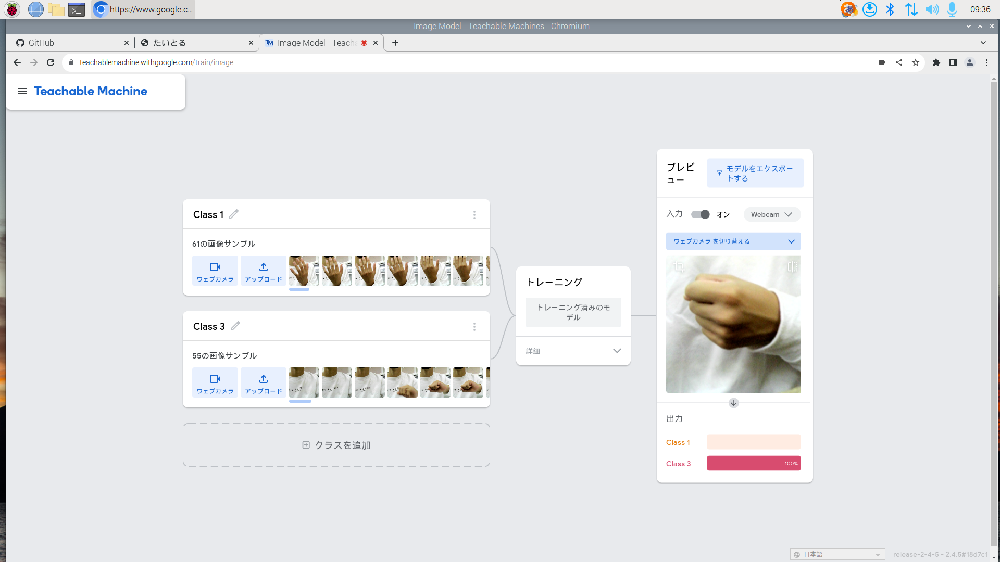
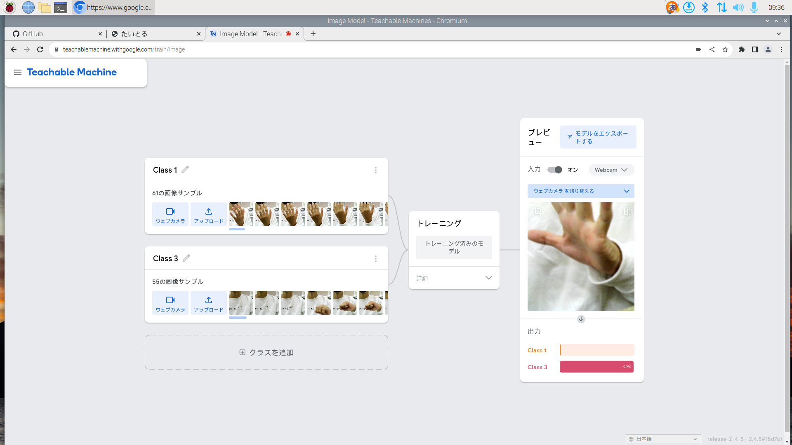
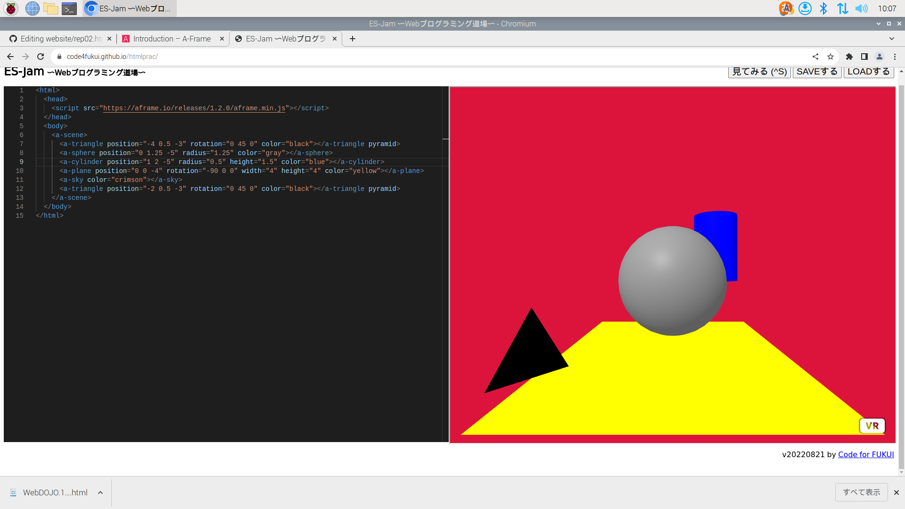

第2週目
2-1 レポートをHTMLで作る
１週目のレポート
1.内容
githubで、自分のwebsiteを開き、Add fileでCreate new fileで新しいファイルを作りペンマークを押し、編集する。
2.感想
写真とかの貼り付けで、1文字でも違うと反映されないので慎重にすることが大事だと思った。
2-2 機械学習体験


1.内容
2.感想
写真として「ぐー」と「ぱー」を覚えさせると、見た画像を判別してどっちが出ているかがわかるのがすごいと思った。
他のもので分析などするのに使われているのだと感じた。
2-3 JavaScript体験：３次元モデルのプログラムを作る

３次元モデル
1.内容
A-FRAMEというWEBサイトを開き、Introductionでプログラムをコピーし、web道場を開きペーストする。
そうすると上の画像のようになるので、コードを変えて色や形座標を変える。
2.感想
３D画像を実際に作成し位置や色、形を変えることができたことでより興味が出た。
１文字でも間違えると反映されなくなるので慎重にすることが大切だと思った。